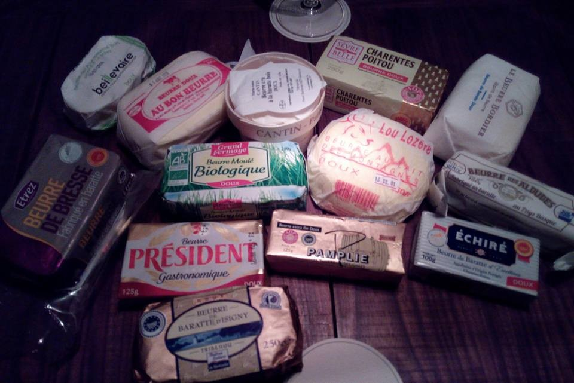

フランス産の無塩バターのまとめ
目次
日本で手に入るフランス産の無塩バター(Beurre de Baratte Doux)を調べて、取りよせました。 みんなで食べ比べた結果、Isigni が一番美味しかったです。

1 Sevre et Belle（セーヴル ベル）
- 1893 年創設
- ポワトゥー=シャラント地方
- グラスフェッドのみで飼育
- パリ農業コンクールでバターが 2008 銀賞、2012 金賞
- 1949 年から生産しているシェーブルチーズ(山羊のチーズ)で有名
- AOP/AOC 認定済み1
- エシレと共同グループ(牛乳卸してる)
- (日本で買うと 現地 4 倍の値段。。。)
- http://amzn.to/2vrhc9u
2 Etrez (エトレ)
- 1936 年設立(地元エトレの酪農家たちによる)
- ブレス地方 (ローヌ・アルプ地域圏アン県を中心として、ブルゴーニュ地域圏ソーヌ・エ・ロワール県 フランシュ・コンテ地域圏ジュラ県にまたがる地域)
- ブレス地方で有名なのは、ブレス鶏、コンテチーズ、グルヌイユ(カエル)
- AOP/AOC 認定済み (イズニー、ポワトゥーについぎ 3 番目) 1
- トウモロコシとグラスフェッドで飼育
- 乳牛はモンベリアルド（montbeliarde）種
- フレーバーにナッツやクルミを思わせるものがある
- グラスフェッドの量によりバター黄色が代わり、冬は薄く、夏は濃い
- http://amzn.to/2vqzfMU
3 Pamplie (パムプリー)
- 1905 年設立
- ポワトゥー=シャラント地方アムプリー村(エシレ村の隣)
- イズニ、エシレとの三強の一つ
- AOP/AOC 認定済み 1
- あっさり、さっぱり、デリケート、ソフト、なめらか、上品
- ミルクやヘーゼルナッツの旨味と芳香
- 2008 年の Gault Millau で受賞されたパリ 10 区の Du Pain et des Idees (ベーカリー)で使用
- http://amzn.to/2v7dnUh
4 Echire (エシレ)
- 1894 年創立
- ポワトゥー=シャラント地方エシレ村
- パムプリー、イズニーとの三強の一つ
- AOP/AOC 認定済み 1
- やわらか、なめらか、クリーミー
- 木の樽
- ニッポンジン ミンナ ダイスキ エシレ-サン
- http://amzn.to/2hwpo2t
5 Bordier (ボルディエ)
- 1982 年創立
- ブルターニュ地方
- ジャン・イヴ・ボルティエさん作
- 手作りで丸三日(普通のバターは 6 時間程度)
- ツゲ材の木製攪拌槽
- クルミ風味
- クセが強い
- 海藻入りが有名
- 近年味が落ちたとのこと
- http://amzn.to/2vBtTPF
6 Isigni (イズニー)
- 1932 年創立
- ノルマンディー地方イズニー地区
- イズニー・シュル・メール酪農協同組合が設立(その後、79 年に隣町のサントメール・エグリーズと合併)
- クリーム色
- シルキー、しなやか、ミルクの甘味
- AOP/AOC 認定済み 1
- パムプリー、エシレとの三強の一つ
- 海沿いで育ったミネラルたっぷりのグラスフェッドで飼育
- http://amzn.to/2vqKHbi
7 Au bon beurre (オー ボン ブール)
- 1996 年創立(バターは 2009 年から)
- ノール＝パ・ド・カレー地域圏パドカレ地区ボーランクール村
- 女性創業者 Celine Deleu(セリーヌ・ドゥルー)
- 従業員 6 名(2015 年当時)
- 品名は"うまいバター"という意味
- 牛乳 20 リットルから 1 キロのみ生産のため低水分(普通は 10kg)
- 滑らか、フレッシュミルク、クリーミー、あっさり
- BORDIER のライバル
- 口込みで広がる
- http://amzn.to/2hwMPbM
8 Duo Lozere (デュオ ロゼール)
- シャステル＝ヌーヴェル、ロゼール県、ラングドック＝ルシヨン地域圏
- 搾乳から包装まで完全手作り
- ゆっくり攪拌に特徴
- 長熟発酵
- 濃厚なコク、余韻短かめ
- http://amzn.to/2vquu5T
9 Grand Fermage (グラン フォルマッジ)
- ブルターニュ地方
- AOC/AOP 認定済み 1
- 有機農法で AB 認定済み
- バイオグラスフェッドで飼育
10 President (プレジデント)
- ペイ・ド・ラ・ロワール地域圏ラヴァル
- フランスの定番バター
- さっぱり
11 Beillevaire (ベイユヴェール)
- ロワール=アトランティク県ナント地区マシュクール村
- チーク樽での拡販
- キャラメル香
- http://amzn.to/2vqVoLj
12 MARIE-ANNE CANTIN (マリー アンヌ カンタン)
- 1950 年創立
- ロワール地方
- パリの乳製品専門店「カンタン」のオリジナル(日本人の爆買いスポット、昔は新宿伊勢丹に支店出してた)
- ミルク風味とコク
13 参考
- Duo Lozere
- Bonjour France 2015 前篇｜ Swallowtail Beverage Unit Diary
- Pamplie - Beurre traditionnel des Deux-S È vres
- Du Pain et Des Idees - Fine and traditionnal Bakery Paris 75010 - Products
- ブレスの AOC バターが美味しかった - エスカルゴの国から
- 調味料番外編の補足、発酵バターを備忘録！（２／２）｜呑兵衛＆食いしん坊’ｓ ブログ at tomatobarrow53
- バターコーヒーにおすすめの 5 種類のグラスフェッドバター！！
- BUTTER MENU │ 二子玉川 ベーカリー・ブレッド&バターファクトリー 二子玉川
- 1515 話 フランス・ノルマンディーと言えば？イズニーの手作りバター！ ｜★３人娘？がパリの薔薇色の生活をご紹介！
- 1528 話 パリおすすめ人気グルメ！フランスバターの今日は世界初のネタよー｜★３人娘？がパリの薔薇色の生活をご紹介！
脚注:
1
AOP（アペラシン・ドリジン・プロテジェ）は欧州連合統一の保護原産地呼称のフランス語(英語は Protected designation of origin、略称 PDO)。 AOC（アペラシン・ドリジン・コントロレ）はフランスにおいて特定の条件を満したもののみに付与される品質保証で、AOP の前身と考えられる。